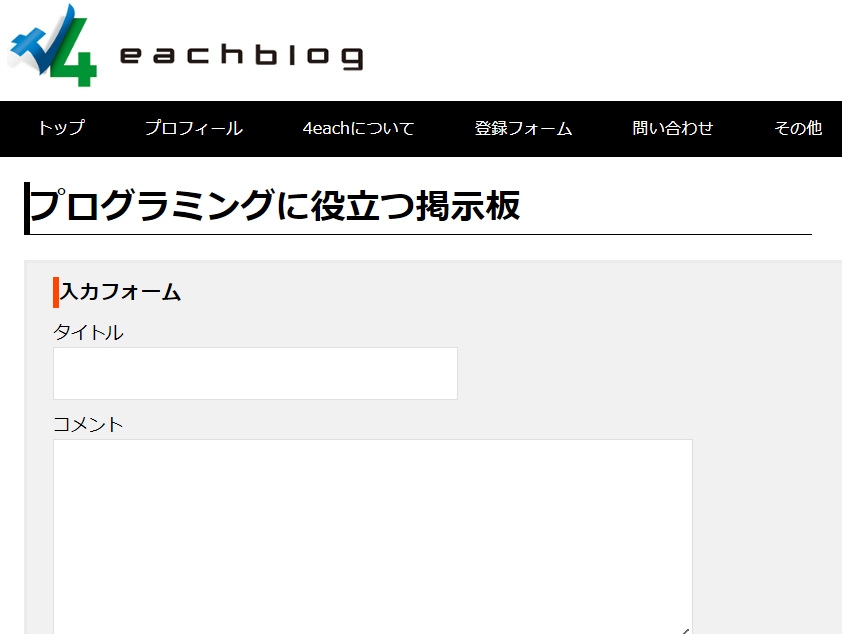
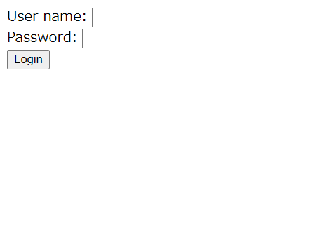
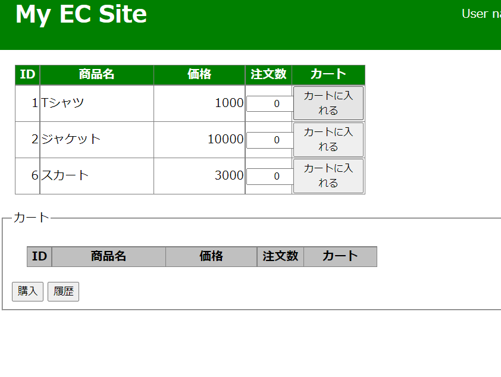

簡易電卓
JavaScript

＜仕様＞
- 各ボタンを押下すると、押下されたボタンの値がテキストボックスに表示される。
- 計算式をテキストボックスに表示させた後、「＝」ボタンを押下すると計算結果がテキストボックスに表示される。
- 「C」ボタンを押下すると、テキストボックスの中身が空になる。
コードはこちら。

干支チェッカー
JavaScript

＜仕様＞
- 年数を入力して「この年の干支をチェック」ボタンを押下すると、「○○年は△年です」というテキストとその年の干支に適した画像が表示される。
- 年数を入力せずに「この年の干支をチェック」ボタンを押下すると、「年数が入力されていません」というテキストが表示され、既に画像を表示されていれば非表示になる。
- 年数をマイナスの値を入力して「この年の干支をチェック」ボタンを押下すると、「年数が正しく入力されていません」というテキストが表示され、既に画像を表示されていれば非表示になる。
コードはこちら。
WEBサイト
HTML/CSS/JavaScript

会員制掲示板
PHP/MySQL
＜仕様＞
- ログイン機能。
- ログイン後、ユーザー名と時間に合わせたコメントが表示される。
- 記事投稿で、ユーザー名と投稿時刻を表示し、最新投稿が一番上に表示される。
※MySQL(データベース)の都合でデモページが開けません。コードのみです。
簡易ログイン
Java/MySQL
- 写経
＜仕様＞
- ログイン機能。
- データベースに登録されているユーザーでログインした場合は、ユーザー名が表示される。
- データベースに登録されていないユーザーでログインした場合は、guestとして表示される。
※MySQL(データベース)の都合でデモページが開けません。コードのみです。
ECサイト
Java/MySQL
- 写経
＜仕様＞
- ログイン機能。
- 管理者サイトでログイン後、商品管理画面に遷移し、登録商品一覧の確認と、商品削除、新規商品の登録ができる。
- お客様サイトでログイン後、ユーザー名と商品一覧が表示され、カート機能が利用できる。また、商品購入後、直近の購入履歴がダイアログで表示される。
※MySQL(データベース)の都合でデモページが開けません。コードのみです。